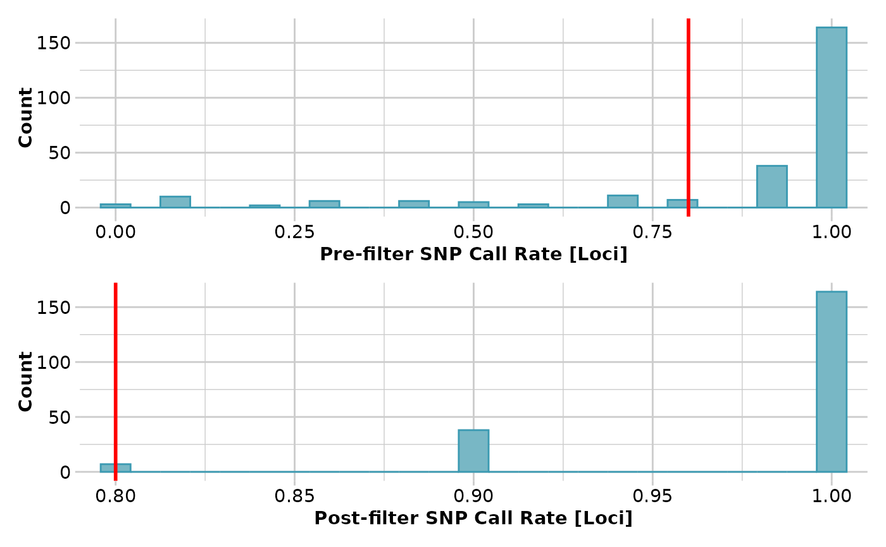
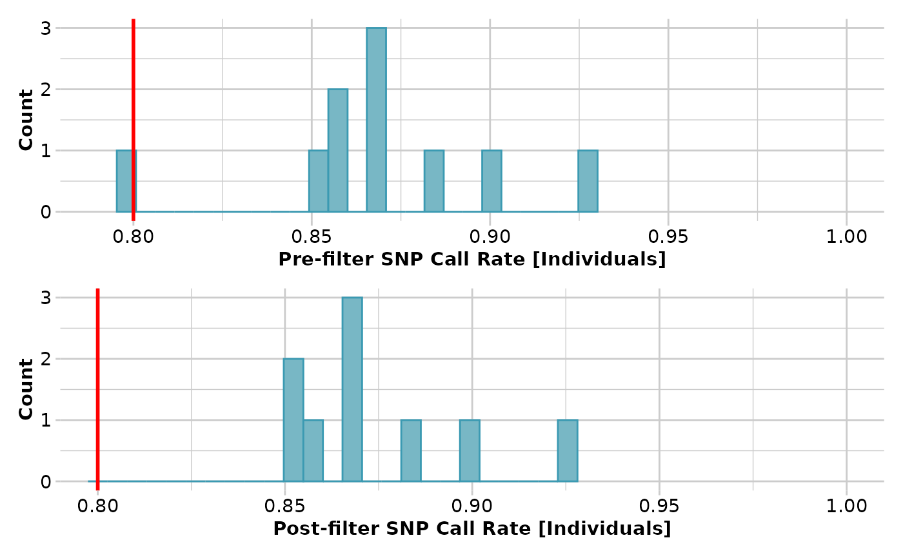
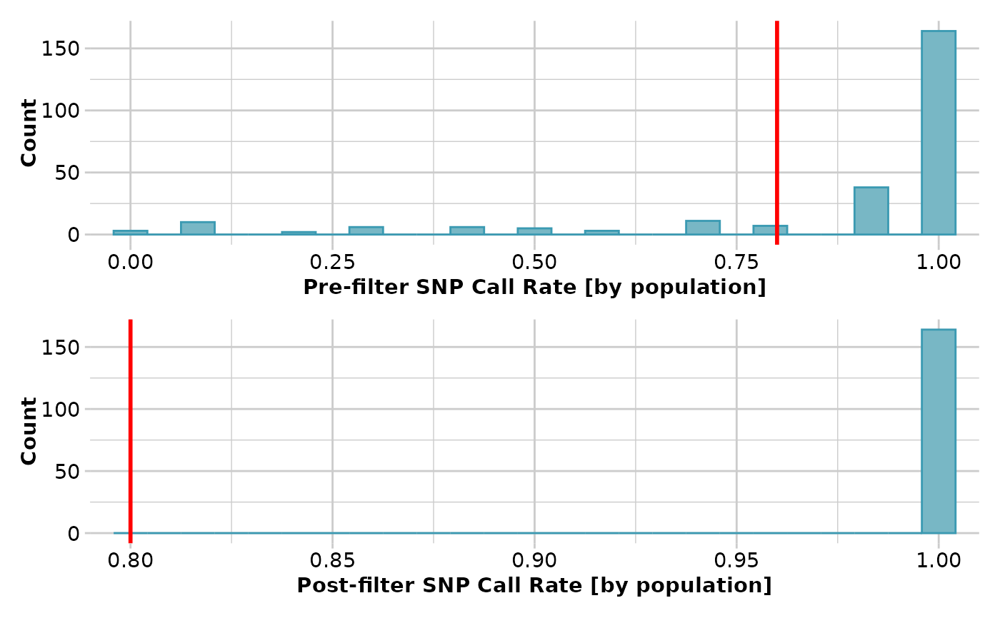
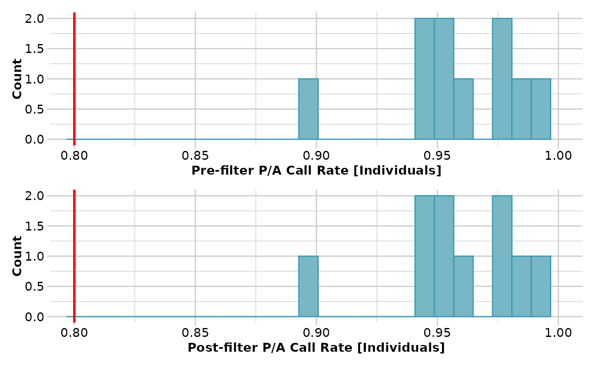

Filters loci or specimens in a genlight {adegenet} object based on call rate
Source:R/gl.filter.callrate.r
gl.filter.callrate.RdSNP datasets generated by DArT have missing values primarily arising from failure to call a SNP because of a mutation at one or both of the restriction enzyme recognition sites. The script gl.filter.callrate() will filter out the loci with call rates below a specified threshold.
Tag Presence/Absence datasets (SilicoDArT) have missing values where it is not possible to determine reliably if there the sequence tag can be called at a particular locus.
Usage
gl.filter.callrate(
x,
method = "loc",
threshold = 0.95,
mono.rm = FALSE,
recalc = FALSE,
recursive = FALSE,
plot.out = TRUE,
plot_theme = theme_dartR(),
plot_colors = two_colors,
bins = 25,
save2tmp = FALSE,
verbose = NULL
)Arguments
- x
Name of the genlight object containing the SNP data, or the genind object containing the SilocoDArT data [required].
- method
Use method='loc' to specify that loci are to be filtered, 'ind' to specify that specimens are to be filtered, 'pop' to remove loci that fail to meet the specified threshold in any one population [default 'loc'].
- threshold
Threshold value below which loci will be removed [default 0.95].
- mono.rm
Remove monomorphic loci after analysis is complete [default FALSE].
- recalc
Recalculate the locus metadata statistics if any individuals are deleted in the filtering [default FALSE].
- recursive
Repeatedly filter individuals on call rate, each time removing monomorphic loci. Only applies if method='ind' and mono.rm=TRUE [default FALSE].
- plot.out
Specify if histograms of call rate, before and after, are to be produced [default TRUE].
- plot_theme
User specified theme for the plot [default theme_dartR()].
- plot_colors
List of two color names for the borders and fill of the plots [default two_colors].
- bins
Number of bins to display in histograms [default 25].
- save2tmp
If TRUE, saves any ggplots and listings to the session temporary directory (tempdir) [default FALSE].
- verbose
Verbosity: 0, silent or fatal errors; 1, begin and end; 2, progress log ; 3, progress and results summary; 5, full report [default 2, unless specified using gl.set.verbosity].
Details
Because this filter operates on call rate, this function recalculates Call Rate, if necessary, before filtering. If individuals are removed using method='ind', then the call rate stored in the genlight object is, optionally, recalculated after filtering.
Note that when filtering individuals on call rate, the initial call rate is calculated and compared against the threshold. After filtering, if mono.rm=TRUE, the removal of monomorphic loci will alter the call rates. Some individuals with a call rate initially greater than the nominated threshold, and so retained, may come to have a call rate lower than the threshold. If this is a problem, repeated iterations of this function will resolve the issue. This is done by setting mono.rm=TRUE and recursive=TRUE, or it can be done manually.
Callrate is summarized by locus or by individual to allow sensible decisions on thresholds for filtering taking into consideration consequential loss of data. The summary is in the form of a tabulation and plots.
Plot themes can be obtained from
Resultant ggplot(s) and the tabulation(s) are saved to the session's temporary directory.
See also
Other filter functions:
gl.filter.allna(),
gl.filter.heterozygosity(),
gl.filter.hwe(),
gl.filter.ld(),
gl.filter.locmetric(),
gl.filter.maf(),
gl.filter.monomorphs(),
gl.filter.overshoot(),
gl.filter.pa(),
gl.filter.parent.offspring(),
gl.filter.rdepth(),
gl.filter.reproducibility(),
gl.filter.secondaries(),
gl.filter.sexlinked(),
gl.filter.taglength()
Author
Custodian: Arthur Georges – Post to https://groups.google.com/d/forum/dartr
Examples
# \donttest{
# SNP data
result <- gl.filter.callrate(testset.gl[1:10], method='loc', threshold=0.8,
verbose=3)
#> Starting gl.filter.callrate
#> Processing genlight object with SNP data
#> Warning: data include loci that are scored NA across all individuals.
#> Consider filtering using gl <- gl.filter.allna(gl)
#> Warning: Data may include monomorphic loci in call rate
#> calculations for filtering
#> Recalculating Call Rate
#> Removing loci based on Call Rate, threshold = 0.8
#> Summary of filtered dataset
#> Call Rate for loci > 0.8
#> Original No. of loci : 255
#> Original No. of individuals: 10
#> No. of loci retained: 209
#> No. of individuals retained: 10
#> No. of populations: 7

#> Completed: gl.filter.callrate
#>
result <- gl.filter.callrate(testset.gl[1:10], method='ind', threshold=0.8,
verbose=3)
#> Starting gl.filter.callrate
#> Processing genlight object with SNP data
#> Warning: data include loci that are scored NA across all individuals.
#> Consider filtering using gl <- gl.filter.allna(gl)
#> Warning: Data may include monomorphic loci in call rate
#> calculations for filtering
#> Recalculating Call Rate
#> Removing individuals based on Call Rate, threshold = 0.8
#> Individuals deleted (CallRate <= 0.8 ):
#> AA032760[EmmacMDBMaci],
#> Summary of filtered dataset
#> Call Rate for individuals > 0.8
#> Original No. of loci : 255
#> Original No. of individuals: 10
#> No. of loci retained: 255
#> No. of individuals retained: 9
#> No. of populations: 6

#> Note: Locus metrics not recalculated
#> Note: Resultant monomorphic loci not deleted
#> Completed: gl.filter.callrate
#>
result <- gl.filter.callrate(testset.gl[1:10], method='pop', threshold=0.8,
verbose=3)
#> Starting gl.filter.callrate
#> Processing genlight object with SNP data
#> Warning: data include loci that are scored NA across all individuals.
#> Consider filtering using gl <- gl.filter.allna(gl)
#> Warning: Data may include monomorphic loci in call rate
#> calculations for filtering
#> Recalculating Call Rate
#> Removing loci based on Call Rate by population
#>
#> Call Rate must be equal to or exceed threshold = 0.8 in all populations
#> Summary of filtered dataset
#> Call Rate in any one population > 0.8
#> Original No. of loci : 255
#> Original No. of individuals: 10
#> No. of loci retained: 164
#> No. of individuals retained: 10
#> No. of populations: 7

#> Completed: gl.filter.callrate
#>
# Tag P/A data
result <- gl.filter.callrate(testset.gs[1:10], method='loc',
threshold=0.95, verbose=3)
#> Starting gl.filter.callrate
#> Processing genlight object with Presence/Absence (SilicoDArT) data
#> Recalculating Call Rate
#> Removing loci based on Call Rate, threshold = 0.95
#> Summary of filtered dataset
#> Call Rate for loci > 0.95
#> Original No. of loci : 255
#> Original No. of individuals: 10
#> No. of loci retained: 186
#> No. of individuals retained: 10
#> No. of populations: 7
#> Completed: gl.filter.callrate
#>
result <- gl.filter.callrate(testset.gs[1:10], method='ind',
threshold=0.8, verbose=3)
#> Starting gl.filter.callrate
#> Processing genlight object with Presence/Absence (SilicoDArT) data
#> Recalculating Call Rate
#> Removing individuals based on Call Rate, threshold = 0.8
#> Summary of filtered dataset
#> Call Rate for individuals > 0.8
#> Original No. of loci : 255
#> Original No. of individuals: 10
#> No. of loci retained: 255
#> No. of individuals retained: 10
#> No. of populations: 7

#> Note: Locus metrics not recalculated
#> Note: Resultant monomorphic loci not deleted
#> Completed: gl.filter.callrate
#>
result <- gl.filter.callrate(testset.gs[1:10], method='pop',
threshold=0.8, verbose=3)
#> Starting gl.filter.callrate
#> Processing genlight object with Presence/Absence (SilicoDArT) data
#> Recalculating Call Rate
#> Removing loci based on Call Rate by population
#>
#> Call Rate must be equal to or exceed threshold = 0.8 in all populations
#> Summary of filtered dataset
#> Call Rate in any one population > 0.8
#> Original No. of loci : 255
#> Original No. of individuals: 10
#> No. of loci retained: 186
#> No. of individuals retained: 10
#> No. of populations: 7
#> Completed: gl.filter.callrate
#>
# }
res <- gl.filter.callrate(platypus.gl)
#> Starting gl.filter.callrate
#> Processing genlight object with SNP data
#> Warning: data include loci that are scored NA across all individuals.
#> Consider filtering using gl <- gl.filter.allna(gl)
#> Warning: Data may include monomorphic loci in call rate
#> calculations for filtering
#> Recalculating Call Rate
#> Removing loci based on Call Rate, threshold = 0.95
#>
 #> Completed: gl.filter.callrate
#>
#> Completed: gl.filter.callrate
#>